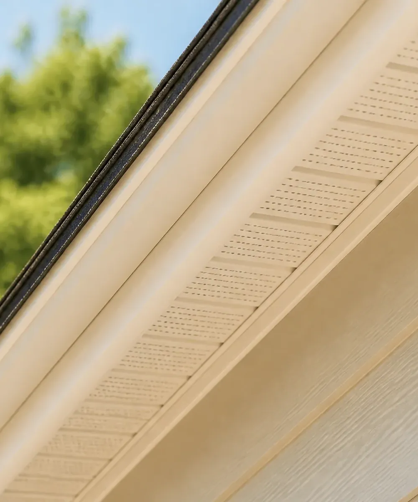
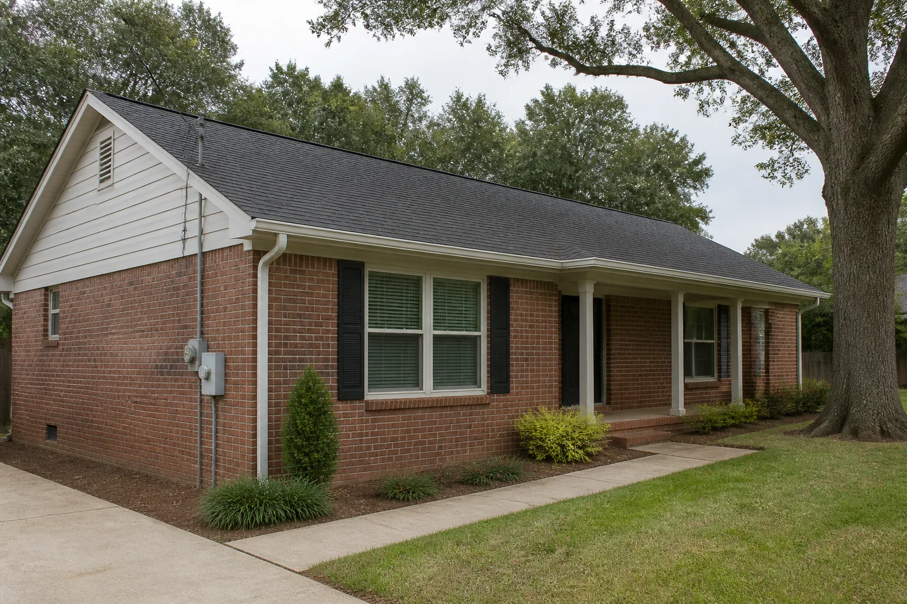
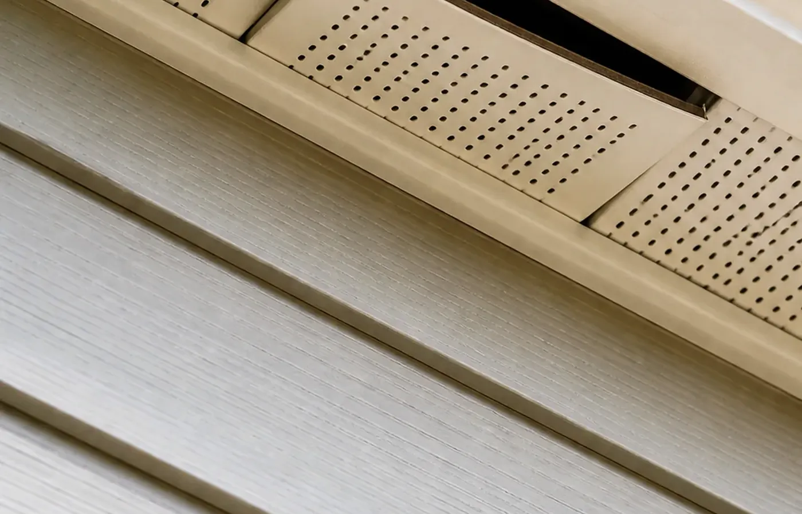
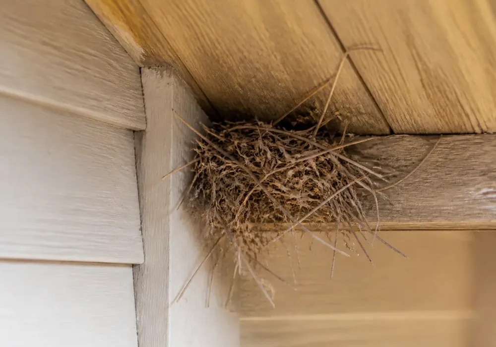
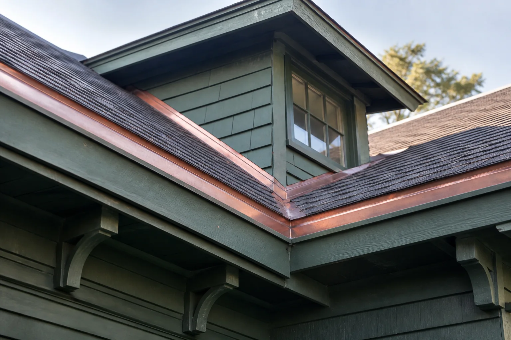
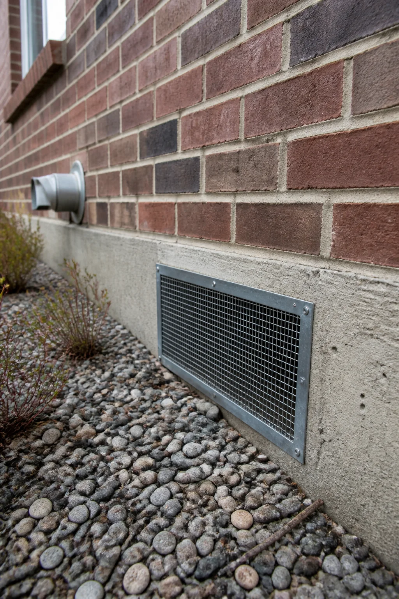

Confirm how the opening is used
Ask whether the gap appears active and how the provider will determine that animals are no longer inside.
Independent provider introductions
Describe visible exterior openings or recurring activity. Wildlife Match may introduce the request to independent providers.
Describe the issue


An independent provider can assess how openings relate to the structure, species and ventilation needs.

Repair in the right order
Sealing should account for active animals, seasonal timing and the way the surrounding roof or wall assembly is intended to work.
Ask whether the gap appears active and how the provider will determine that animals are no longer inside.
Soffits, vents, masonry and utility penetrations may require different fastening, screening or repair approaches.
Discuss ventilation, drainage, equipment clearances and who is responsible for finish repairs and follow-up.
Before the conversation
Follow the building envelope
The most obvious gap is not always the only access point. Providers may follow roof, wall and foundation transitions to identify connected openings while preserving the way the building drains and breathes.


Metal, masonry, wood, vinyl and roofing assemblies require different fasteners, sealants, screening and finish details.
A repair should not redirect water, trap moisture or reduce the airflow required by attic, crawlspace or equipment systems.
Ask providers to distinguish actively used access points from nearby gaps that are suitable for preventive reinforcement.
Photographs, marked opening locations and a defined observation period help confirm what was completed and what still needs attention.
A clearer written scope
A useful scope should explain the active openings, proposed materials and the sequence for confirming animals are out.
Ask about observation, one-way devices, timing and the steps required before final closure.
Look for location-specific materials, attachment methods and responsibility for finish work.
Confirm that screening or sealing will not block required airflow, drainage paths or equipment clearances.
Ask for photographs, a written opening list, return-visit terms and any limitations on the warranty.
Exclusion planning should account for animals, building performance and repair responsibility.
Ask why it is compatible with the opening and surrounding building materials.
Confirm how providers determine that animals are out before final sealing.
Ask about young animals, nesting periods and species-specific rules.
Confirm photographs, written scope, warranty and return visits.
Ready to take the next step?
Use the shared request form to organize the details for possible introduction to independent sealing and prevention providers.